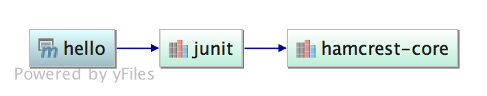
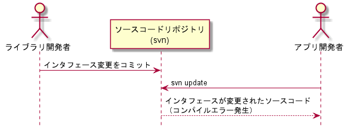
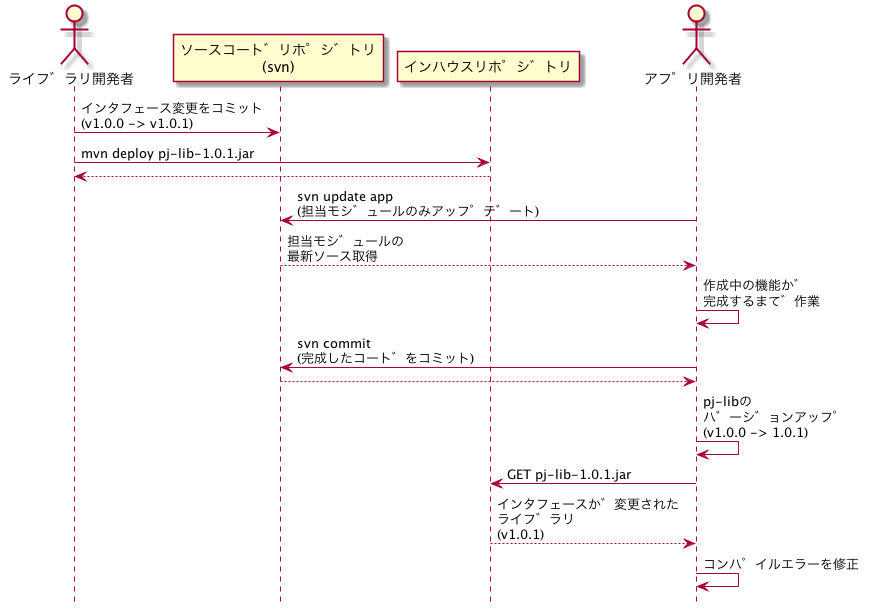
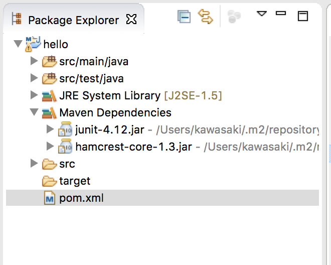
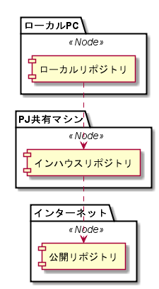
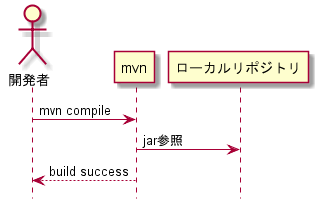

Maven3 チュートリアル
Table of Contents
1 Hello Maven
1.1 TODO archetypeからプロジェクト作成してみよう
シンプルなpom.xmlから学習するため、 デフォルトのアーキタイプからプロジェクトを生成します。
cd example mvn archetype:generate
アーキタイプの種類を選べと言われます。
Choose a number or apply filter (format: [groupId:]artifactId, case sensitive contains): 705:
そのままエンターキーを押し、デフォルトの705(maven-archetype-quickstart)を選択します。
その他入力を求められますので以下のように入力します（デフォルト値）。
| 要素 | 入力例 |
|---|---|
| groupId | com.example |
| artifactId | hello |
| version | 1.0-SNAPSHOT |
| package | com.example |
1.2 TODO pom.xmlを見てみよう
作成されたpom.xmlを眺めてみます。
cd hello more pom.xml
1.2.1 pom.xml
<project xmlns="http://maven.apache.org/POM/4.0.0" xmlns:xsi="http://www.w3.org/2001/XMLSchema-instance"
xsi:schemaLocation="http://maven.apache.org/POM/4.0.0 http://maven.apache.org/xsd/maven-4.0.0.xsd">
<modelVersion>4.0.0</modelVersion>
<groupId>com.example</groupId>
<artifactId>hello</artifactId>
<version>1.0.0</version>
<packaging>jar</packaging>
<name>hello</name>
<url>http://maven.apache.org</url>
<properties>
<project.build.sourceEncoding>UTF-8</project.build.sourceEncoding>
</properties>
<dependencies>
<dependency>
<groupId>junit</groupId>
<artifactId>junit</artifactId>
<version>4.12</version>
<scope>test</scope>
</dependency>
</dependencies>
</project>
1.3 TODO ビルドしてみよう
コマンドを実行して、成果物が作成されることを確認しましょう。
| コマンド | target配下の成果物 | 説明 |
|---|---|---|
| mvn compile | classes/ | classファイル |
| mvn test | test-classes/,surefire-reports/ | classファイルとレポート |
| mvn package | hello-1.0-SNAPSHOT.jar | jarファイル |
| mvn install | - | .m2/repositoryに配置される |
| mvn site | site | レポート |
| mvn clean | - | targetが削除される |
1.4 暗黙の設定値を確認しよう
mavenのpom.xmlは多くのデフォルト設定値があります。 また、他のpom.xmlから値を引き継ぐこともできます。
今のpom.xmlがどういう状態であるか確認する場合、 以下のコマンドが頼りになります。
1.4.1 TODO 完全な設定値を出力する
settings.xmlやparentのpomを含めた設定値を出力します。
mvn help:effective-pom
1.4.2 TODO 依存関係を出力する
mvn dependency:tree
[INFO] com.example:hello:jar:1.0-SNAPSHOT [INFO] \- junit:junit:jar:3.8.1:test [INFO] ------------------------------------------------------------------------ [INFO] BUILD SUCCESS [INFO] ------------------------------------------------------------------------
1.5 デフォルトのビルド設定を試してみよう。
| pom.xmlの要素 | 説明 |
|---|---|
| <sourceDirectory> | ソース置き場 |
| <testSourceDirectory> | テストソース置き場 |
| <outputDirectory> | classファイル等の出力先ディレクトリ |
| <testOutputDirectory> | テストclassファイル等の出力先ディレクトリ |
| <resources> | リソース置き場 |
| <testResources> | テストリソース置き場 |
1.5.1 TODO コンパイル設定
ソースを編集してみる。
com.example.App
public static void main( String[] args )
{
System.out.println( "Hello Maven!" );
}
テストを実行します。
mvn test
1.5.2 TODO テストコンパイル設定
src/main配下のクラスで、junitのクラスを使ってみる。
public static void main( String[] args )
{
junit.framework.TestCase.assertTrue(true);
System.out.println( "Hello World!" );
}
テストを実行します。
mvn test
[ERROR] Failed to execute goal org.apache.maven.plugins:maven-compiler-plugin:3.1:compile (default-compile) on project hello: Compilation failure [ERROR] /home/kawasaki/tmp/mvn_test/hello/src/main/java/com/example/App.java:[11,24] パッケージjunit.frameworkは存在しません
なぜコンパイルは失敗したのでしょうか？
1.6 設定を変更してみよう
1.6.1 TODO versionを変えてみる。
<groupId>com.example</groupId> <artifactId>hello</artifactId> <version>1.0.0</version>
mvn clean package ls target
1.6.2 TODO dependencyを変えてみる。
- JUnit4.12にしてみる
http://search.maven.org/ で検索する。
http://search.maven.org/#artifactdetails%7Cjunit%7Cjunit%7C4.12%7Cjar
<dependency> <groupId>junit</groupId> <artifactId>junit</artifactId> <version>4.12</version> </dependency>依存関係はどう変化しましたか？
mvn dependency:tree
[INFO] com.example:hello:jar:1.0.0 [INFO] \- junit:junit:jar:4.12:test [INFO] \- org.hamcrest:hamcrest-core:jar:1.3:test [INFO] ------------------------------------------------------------------------ [INFO] BUILD SUCCESS [INFO] ------------------------------------------------------------------------
org.hamcrest:hamcrest-coreというライブラリは、なぜ現れたのでしょうか？
- TODO 好きなライブラリを足してみよう
<dependency> <groupId>org.springframework.boot</groupId> <artifactId>spring-boot-starter-web</artifactId> <version>1.3.2.RELEASE</version> </dependency>
依存関係はどう変化しましたか？
mvn dependency:tree
2 依存関係
2.1 アーティファクト
mavenでは、あるmavenモジュールから作り出される成果物（典型的にはjarやwarファイル）を アーティファクト(artifact ≒ 成果物)と呼びます。
2.2 推移的依存関係
あるアーティファクトAが別のアーティファクトBに依存しているとします。 自分のモジュールにアーティファクトAを<dependecy>に加えた場合、 アーティファクトBも依存関係に含まれます。 これを推移的依存関係といいます。
2.2.1 JUnitの例

JUnitはtestスコープで使用しているので、 hamcrestもtestスコープとなる。
2.2.2 Logbackの例

2.3 <dependency>の要素
<dependecy>には依存するアーティファクトの情報を記載します。
| 要素 | 説明 | 例 |
|---|---|---|
| groupId | グループ一意に特定するID | org.springframework |
| artifactId | グループ内で成果物を一意に特定するID | spring-webmvc |
| version | バージョン | 4.2.4.RELEASE |
| scope | その依存ライブラリをどの場面で使用するか(後述) | compile |
2.4 versionの考え方
PJ内で、ライブラリを共有する場合を考えてみます。
2.4.1 バージョン管理システムで共有する場合
svnを使用しているとします。

アプリ開発チームが、朝一番でsvn updateすると、PJライブラリに大幅に変更が入っていました。 アプリ開発チームは、新機能作成の途中で、変更されたライブラリの取り込みを余儀なくされました。
2.4.2 インハウスリポジトリで共有する場合

2.4.3 注意点
SNAPSHOTバージョンを使用すると、最新のライブラリがダウンロードされるので、 バージョン管理システムで共有する場合と同じ事象が発生します。 明示的にバージョン番号を変更することで、任意のタイミングでライブラリを リリース／取り込みできます。
3 スコープ
3.1 スコープの種類
あるdependecyが、どのようなときに使用されるか（クラスパスに追加されるか）を 定義したものです。
| スコープ | 説明 |
|---|---|
| compile | コンパイル時に使用する |
| test | テスト時に使用する |
| runtime | 実行時に使用する |
| provided | 実行時には、実行環境(コンテナ)により提供される |
3.1.1 クラスパスが現れる場面
そもそも、クラスパスというものが、どのような場面で現れるのか おさらいしましょう。
| 場面 | 発行されるコマンド | mvnでの例 |
|---|---|---|
| コードをコンパイルする | javac (src/main) | mvn compile |
| テストコードをコンパイルする | javac (src/test) | mvn test-compile |
| アプリを実行する | java (target/classes) | mvn jetty:run |
| テストを実行する | java (target/test-classes) | mvn test |
3.2 スコープとクラスパスの組み合わせ
上記の組み合わせをマトリックスにすると以下のようになります。
| scope | javac (src/main) | javac (src/test) | java (target/classes) | java (target/test-classes) |
|---|---|---|---|---|
| compile | o | o | o | o |
| test | x | o | x | o |
| runtime | x | x | o | o |
| provided | o | o | x | x |
3.3 TODO 小テスト
適切なスコープとその理由を考えてみよう。
| ライブラリ | 説明 | 適切なスコープ | そのスコープにした理由 |
|---|---|---|---|
| junit.jar | ユニットテスト用ライブラリ | ||
| ojdbc6.jar | Oracle JDBCドライバ | ||
| slf4j-api.jar | ロギングライブラリ | ||
| servlet-api.jar | Servlet API |
4 Eclipseにインポートしてみよう
4.1 TODO MavenプロジェクトをEclipseに取り込んでみよう
File -> Import -> Existing Maven Project

4.2 Mavenの設定がどうEclipseに取り込まれているか
Eclipseの設定を確認してみよう。
4.2.1 TODO Package Exploere
- src/main/javaがソースフォルダとして認識されている
- src/test/javaがソースフォルダとして認識されている
- 依存ライブラリが追加されている(junit, hamcrest)

4.2.2 TODO Project Properties (Source)
| ソースフォルダ | 出力先 |
|---|---|
| src/main/java | target/classes |
| src/test/java | target/test-classes |

4.2.3 TODO Project Properties (Libraries)
- 依存ライブラリJunitが、Mavenローカルリポジトリのjarを参照している

4.2.4 TODO Project Properties (Resource)
- Text file encoding が UTF-8 に設定されている

4.3 pom.xmlが変更された場合
pom.xmlが変更された場合、設定変更をEclipseに教えてあげる必要があります。
Maven -> Update Project...
4.3.1 TODO pom.xmlの変更を取り込んでみよう
pom.xmlを編集して、Eclipse上でUpdate Projectを実行してみましょう。
依存ライブラリを追加します。
<dependency>
<groupId>commons-beanutils</groupId>
<artifactId>commons-beanutils</artifactId>
<version>1.9.2</version>
</dependency>
Update Projectを実行し、設定がどう変更したか確認します。
5 Mavenリポジトリ
5.1 リポジトリの種類
| 種類 | 説明 | 主な用途 |
|---|---|---|
| ローカルリポジトリ | ローカルPC上にあるリポジトリ( ~/.m2/repository ) | キャッシュ |
| インハウスリポジトリ | PJ内で構築したリポジトリ | PJ成果物(jar等)をPJ向けに公開する |
| リモートリポジトリ | インターネット上に公開されたリポジトリ(Maven Central, jcenter等) | ライブラリを公開する |

5.2 ローカルリポジトリ
- ファイルシステム上のキャッシュ(~/.m2/repository)。
- mavenで使用するライブラリは必ずここにキャッシュされる。

5.3 インハウスリポジトリ
5.3.1 PJのライブラリをデプロイ・取得する
インハウスリポジトリを仲介して、ライブラリの配布を行うことができます。

5.3.2 リモートリポジトリのファイルを取得する
インハウスリポジトリは、リモートリポジトリへのプロキシ、キャッシュを兼ねることが多いです。

インハウスリポジトリにキャッシュされている場合、リモートリポジトリへのアクセスは発生しません。
5.4 リモートリポジトリ
デフォルトではMaven Centralが有効なリモートリポジトリとして設定されている。
mvn help:effective-pom
<repositories>
<repository>
<snapshots>
<enabled>false</enabled>
</snapshots>
<id>central</id>
<name>Central Repository</name>
<url>https://repo.maven.apache.org/maven2</url>
</repository>
</repositories>
6 プロパティ
6.1 プロパティ
pom.xml内で、
${プロパティ名}
のように記述することで、指定したプロパティの値が展開されます。
6.2 Mavenプロジェクトプロパティ
Mavenがデフォルトで用意しているプロパティがあります。
| プロパティ名 | デフォルト値 |
|---|---|
| project.build.directory | target |
| project.build.outputDirectory | target/classes |
| project.build.testOutputDirectory | target/test-classes |
| project.compileSourceRoots | src/main/java |
| project.testCompileSourceRoots | src/test/java |
プロパティにどんな値が設定されているか表示してみよう。
cd example/maven_props more pom.xml mvn antrun:run
6.2.1 その他のプロパティを表示してみよう
以下のプロパティを表示して、どのような値が設定されているか見てみよう。
- project.basedir
- project.name
- project.version
- project.build.finalName
- project.artifactId
6.3 環境変数
env.<環境変数名>で任意の環境変数を取得できます。
例：JAVA_HOMEの場合
env.JAVA_HOME
6.3.1 環境変数PATHを表示させてみよう
vi example/maven_props/pom.xml mvn antrun:run
6.4 TODO ユーザ定義プロパティ
<properties>内に、以下のようにして任意のプロパティを設定できます。
<プロパティ名>プロパティ値</プロパティ名>
<project>
:
<properties>
<my.prop>MY PROPERTY</my.prop>
</properties>
:
</project>
6.4.1 使用例
6.4.2 自分で設定したプロパティを表示してみよう
<echo message="my.prop=${my.prop}"/>
7 フェーズとゴール
7.1 ライフサイクル、フェーズ、ゴール
Mavenのライフサイクルにはいくつかのフェーズがあり、 各フェーズは、いくつかのゴールと関連付けられています。
https://maven.apache.org/guides/introduction/introduction-to-the-lifecycle.html
- フェーズはイベントと考えるとわかりやすい
- ゴールはイベント発生時にコールバックされる処理
- どのようなゴールが関連付けられているかはpomの設定による(例:mvn package)
7.1.1 デフォルトライフサイクル(抜粋)
- validate
- compile
- test
- package
- verify
- install
- deploy